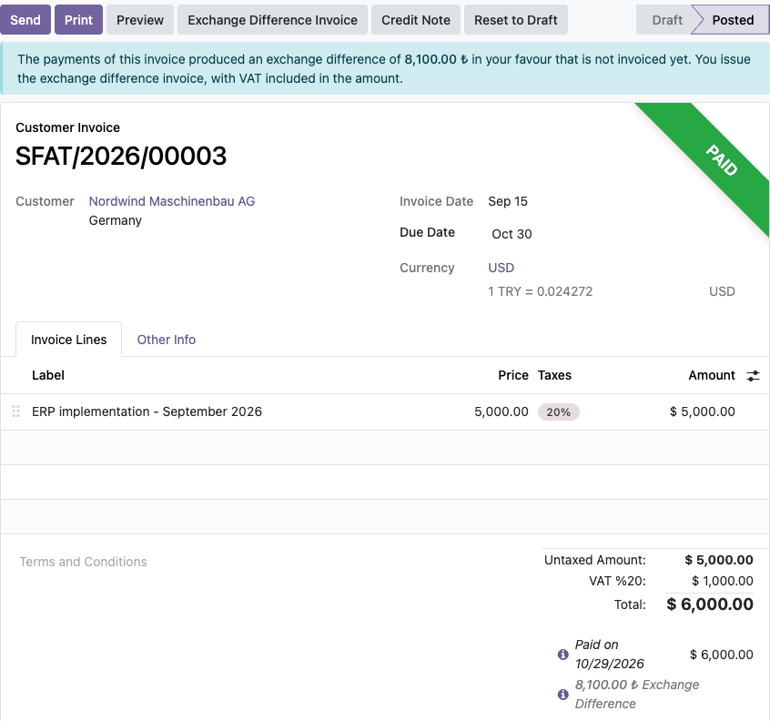
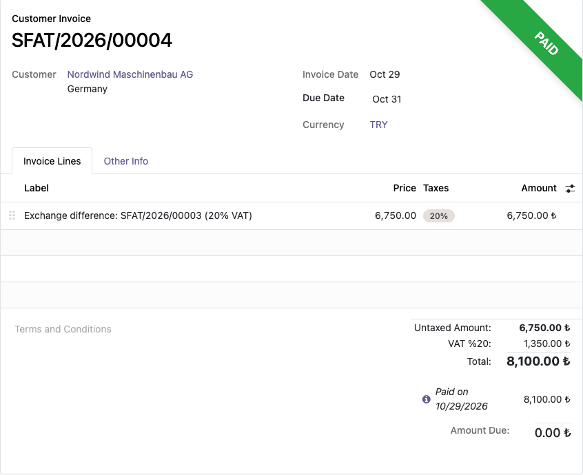

In Türkiye, when a foreign currency invoice is paid at a different rate, the realized exchange difference (kur farkı) is subject to VAT and must be invoiced by the party it favours. Odoo books the difference on the exchange gain or loss account but issues no invoice. This module creates that invoice from the payment, with the VAT taken out of the difference.
$6,000 booked at 41.20, collected at 42.55: 8,100.00 TRY difference = 6,750.00 + 1,350.00 VAT (20%).
Invoices with withholding (tevkifat) or non-percentage taxes are not handled automatically; the button explains why.


Odoo 17.0 (tested on Community with the Turkish chart of accounts). Depends only on account.
No external service is used. Licensed under LGPL-3. Questions and bug reports:
destek@odoo-tr.com
Dövizli bir fatura farklı kurdan tahsil edildiğinde ya da ödendiğinde oluşan kur farkı KDV'ye tabidir ve lehine oluşan tarafça faturalanır. Odoo kur farkını 646/656 hesabına yazar ama fatura kesmez. Bu modül kur farkı faturasını tek tıkla oluşturur.
Sorular ve hata bildirimleri: destek@odoo-tr.com